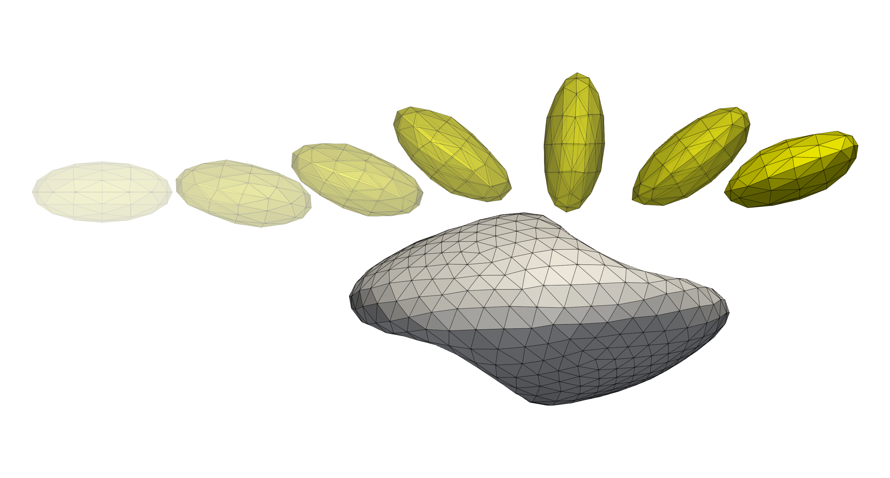
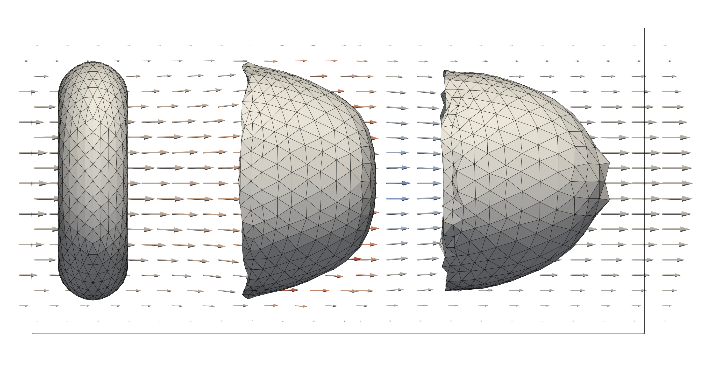
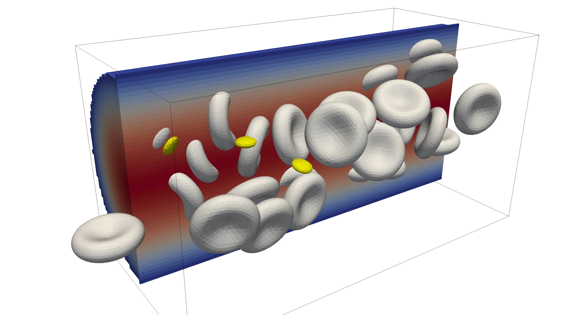
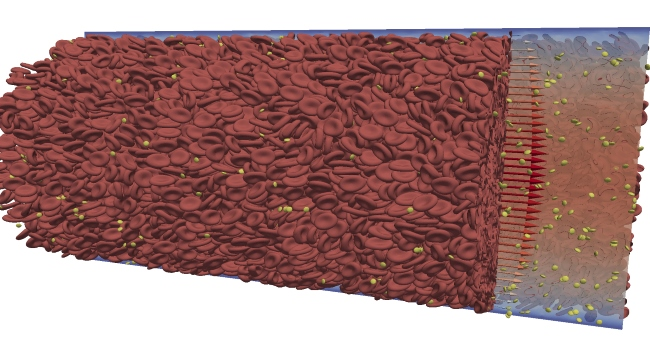

HemoCell¶
HemoCell is a parallel computing framework for simulation of dense deformable capsule suspensions, with special emphasis on blood flows and blood related vesicles (cells). The library implements validated mechanical models for Red Blood Cells (RBCs) and is capable of reproducing emergent transport characteristics of such complex cellular systems [1]. HemoCell is capable of handling large simulation domain sizes and high shear-rate flows providing a virtual environment to evaluate a wide palette of microfluidic scenarios [2, 3, 4].
For the simulation of dense flows, HemoCell employs the Immersed Boundary Method (IBM) to couple the immersed vesicles, e.g. RBCs, platelets (PLTs), leukocytes, or other custom cell types to the fluid (e.g., plasma). The particles are tracked using a Lagrangian discrete element approach, while the flow field is implemented using the lattice Boltzmann method (LBM). The current implementation is based on the Palabos library. HemoCell manages all required data structures, such as materials and cell models (particles), their interactions within the flow field, load-balancing, and communication among the processors.
The library provides validated and highly optimised mechanical models for the simulation of red blood cells [5, 6]. Furthermore, the library is extensible and allows to implement different mechanical (cell) models [7, 8] and cell-binding techniques [9] to study numerous application-specific behaviour.
The code is implemented in C/C++ with parallelism achieved through MPI, although only for advanced use-cases the users are required to interact with the parallelism, which is otherwise hidden from the user. The system is build with CMake and runs on a variety of systems and HPC clusters (see getting started).
Multiple examples are provided to illustrate typical use-cases of HemoCell:
Developing mechanical models for different cell types and their interaction. These are typically quick running simulations on single processors (order of seconds to minutes) that aim to investigate/validate different formulations of mechanical models for the immersed cells, e.g. shearing, stretching, or “parachuting” of a single cell. Additionally, one might want to study the interaction between colliding particles, e.g. Colliding cells with interior viscosity.
 Studying large simulation domains with large number of immersed particles. These simulations are typically derived from straight channel flow conditions, where the domain size, number of immersed particles, and flow conditions are varied. These simulations can vary from quick running simulations on small hardware (desktop/workstation) to long lasting simulations on large HPC compute clusters with thousands of cores. Examples of smaller pipe flow cases are presented in Pipe flow and Pipe flow with periodic inflow.
 
{kind=link}
{kind=link}
{kind=link}
{kind=link}
When using HemoCell please cite the corresponding HemoCell paper(s) [1].
User Guide¶
Acknowledgments¶
HemoCell is developed and maintained by several researchers. The list of developpers and mainteainers at the last document update:
Gábor Závodszky |
Developer and Co-PI |
G.Zavodszky at uva.nl |
Alfons Hoekstra |
Co-PI |
|
Christian Spieker |
Developer |
C.J.Spieker at uva.nl |
Jelle van Dijk |
Developer |
j.vandijk3 at uva.nl |
Konstantinos Asteriou |
Former developer |
|
Mark Wijzenbroek |
Former package maintainer |
|
Eleanor Broadway |
Former GPU developer |
|
Ben Czaja |
Former developer |
|
Max van der Kolk |
Former developer |
|
Lampros Mountrakis |
Former developer |
|
Victor Azizi |
Former developer |
|
Britt van Rooij |
Former developer |
|
Saad Allowayyed |
Former developer |
|
Maurits Bos |
Former contributor |
|
Daan van Ingen |
Former contributor |
|
Hendrik Cornelisse |
Former contributor |
|
Mike de Haan |
Former contributor |
|
Kevin de Vries |
Former contributor |
|
Jonathan de Bouter |
Former contributor |
|
Roland Joo-Kovacs |
Former contributor |
If you have any question please open a Github discussion.
Citing HemoCell¶
When using HemoCell please cite the HemoCell paper:
@article{Zavodszky:2017,
author={Závodszky, Gábor and van Rooij, Britt and Azizi, Victor and Hoekstra, Alfons},
title={Cellular Level In-silico Modeling of Blood Rheology with An Improved Material Model for Red Blood Cells},
journal={Frontiers in Physiology},
volume={8},
pages={563},
year={2017},
url={https://www.frontiersin.org/article/10.3389/fphys.2017.00563},
doi={10.3389/fphys.2017.00563},
issn={1664-042X},
}
Contributions¶
Before you contribute¶
Please make sure that your contribution falls under HemoCell license.
If you want to resolve a bug : make sure that it still exists. You can build the latest master branch and verify that the error is reproducable.
Make sure that the bug you want to report is not already reported in our Github issues and that no one is working on it.
If you have any questions about the software or if you are facing any issues using it feel free to open a Github discussion.
Code contribution¶
Create a fork of HemoCell repository.
Create a new branch from the develop branch for the issue you want to work on. Please give a name to your branch that is relevant to the issue.
Modify/add code to your branch.
Before pushing make sure you have not included unrelated changes and that the project builds properly.
After you are done, push your changes and create a pull request from your branch to the develop branch.